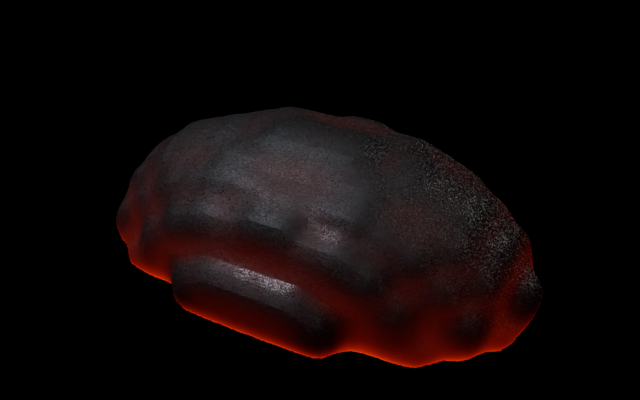
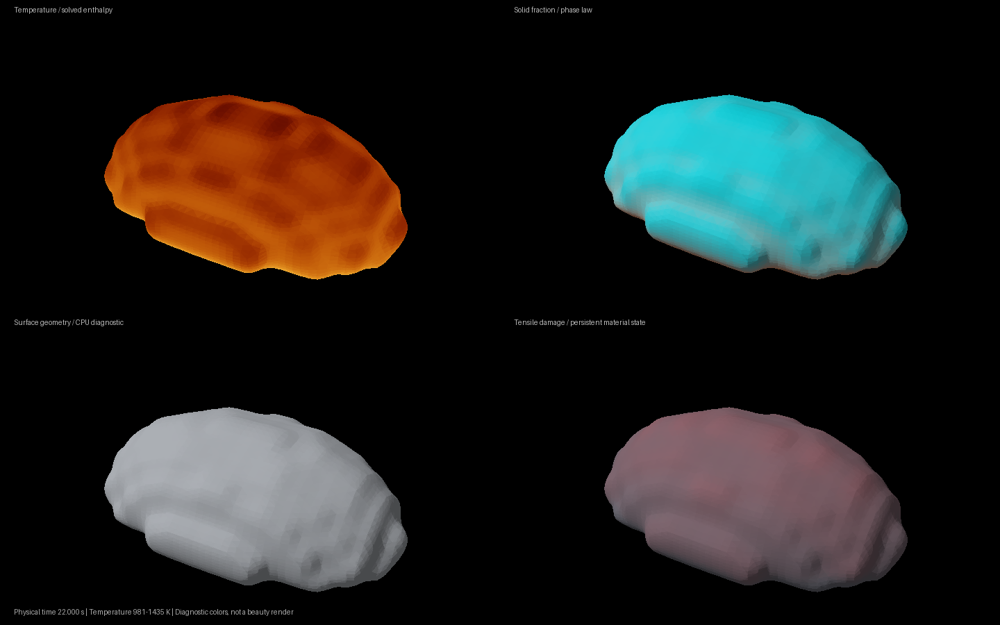

Lava development.
The cooling surface now stays smooth as crust forms. Heat transfer stays bounded, and the rock detail moves with the material.

Actual saved MPM state at 22 seconds · Mitsuba CPU · Black backdrop · Small optical diagnosticThe finished fractured-lava result is still unresolved.
This image verifies surface and material changes. It does not yet show the heavy separated basalt plates, sustained breakup or final motion quality.
Current simulation evidence
The physical inlet has reached 10.54 seconds. Its maximum continuum damage is 99.5%; it has 6 broken connectivity edges. Full fracture convergence remains unverified.
32 current-source component and integration checks pass. Separate tests verify bounded heat transfer, material-attached texture coordinates, and unchanged exterior geometry when unbroken material crystallizes. These are numerical checks, not a finished-shot quality score.

Diagnostic colors expose the actual coarse simulation state.